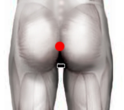

Papiloma virus
Pares
próstata - recto
ano - ano
plexo axilar- plexo axilar*
lóbulo hepático - vena mesentaria
útero - recto
testículo - recto

*Nota: También responde como infraaxilar
Generalidades:
Virus ADN también llamado Virus del Papiloma Humano (VPH). En realidad existen más de 100 variedades de este virus, algunos causan verrugas en manos y pies (bajo riesgo), otros en genitales (alto riesgo). Algunos afectan las células predisponiendo a la aparición de ciertos tipos de cáncer como el cancer cervicouterino.
Sintomatología diversa: hemorroides, verrugas vaginales si se asocia con lepra, produce miomas, aparecen quistes. Observar también próstata-recto, trompa- uretra. También produce ulceras en la matriz; ojo de pescado, en la planta del pie.
El Virus del papiloma humano es considerado uno de los principales factores detonadores del cancer; como el cervicouterino, cancer de pene, o de garganta. Esto puede suceder después de mucho tiempo de tener el virus y tiene mayor incidencia en mujeres que en hombres, también en ellas la enfermedad presenta mayores síntomas; en el hombre, la mayoría de las veces es asintomático.
Se estima que más del 80% de la población humana, sexualmente activa, en algún momento de su vida ha contraído el virus. Puede permanecer latente (asintomático) por periodos prolongados, por lo que la persona lo puede contagiar de forma inadvertida. Por lo tanto, se recomienda revisar también a la(s) pareja(s) sexual(es).
Transmisión:
Se transmite por contacto sexual (genital, anal, oral). Se aconseja usar el condón, mantener una sola pareja sexual. La vacuna también es un buen medio preventivo.